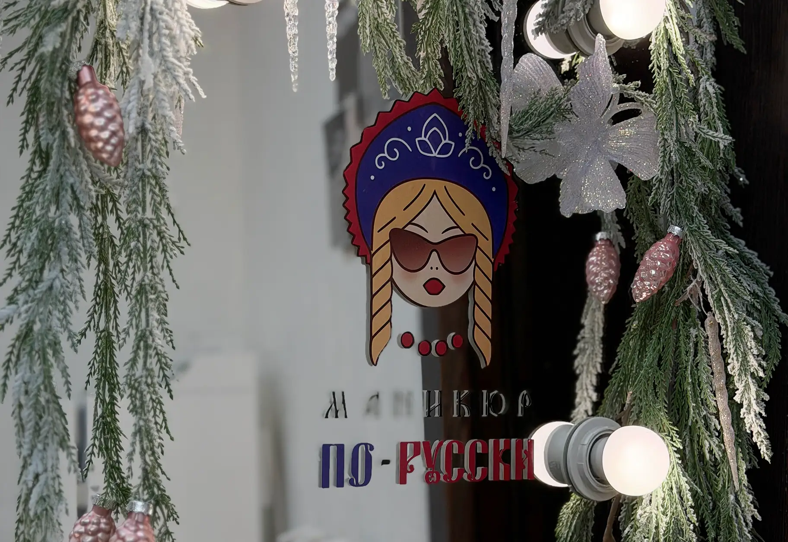
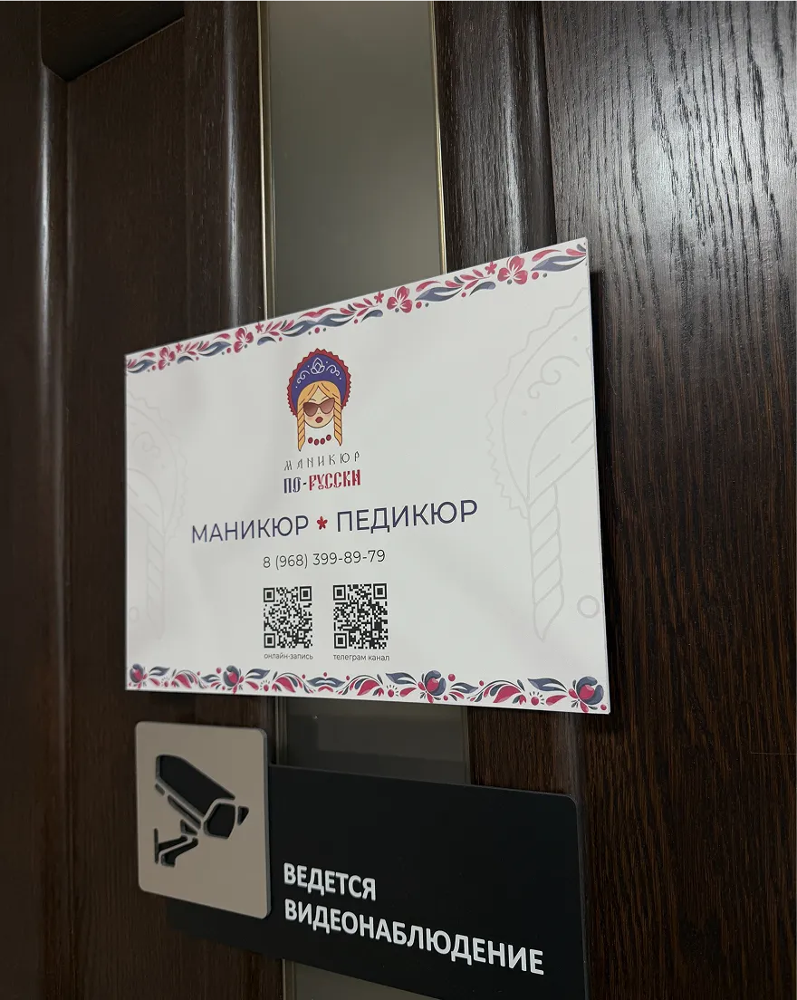
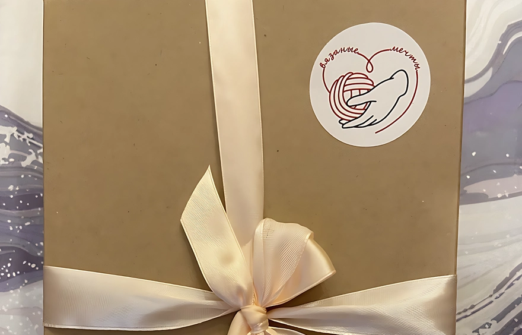
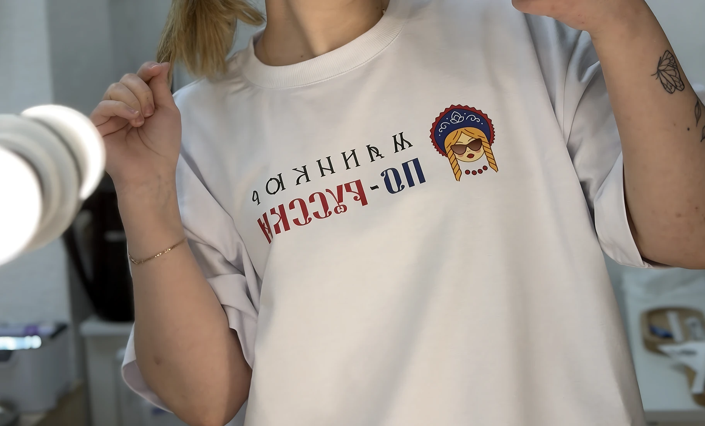
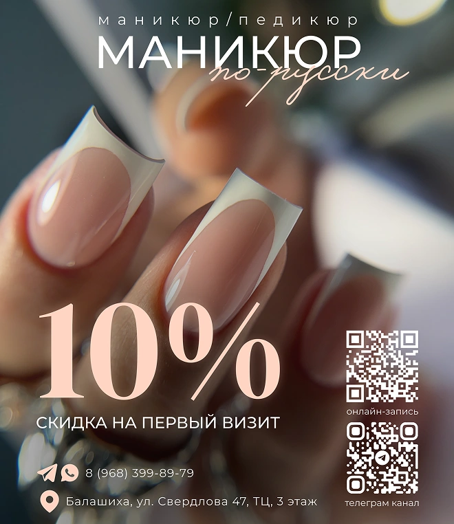
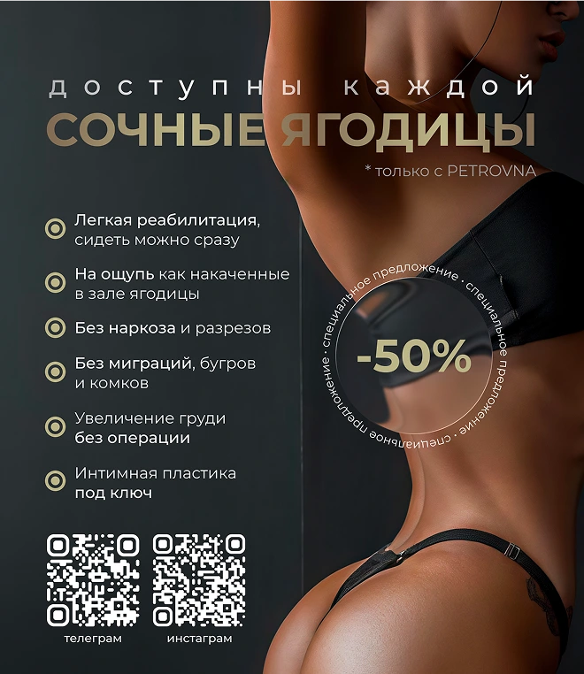

Фриланс
Мой путь во фрилансе начался как способ применить навыки в реальных задачах, а не в учебных или абстрактных проектах. Работа без команды и готовых процессов быстро научила ответственности, внимательности к деталям и умению доводить проект до результата. Отдельной частью этого опыта стала коммуникация с клиентами. Не все задачи формулируются четко, и не все клиенты одинаково понимают процесс. Со временем я научился находить подход, задавать правильные вопросы и выстраивать рабочий диалог даже в сложных ситуациях. Фриланс стал для меня средой профессионального роста, где каждое решение имело последствия, а дизайн перестал быть теорией и начал работать на конкретные цели

Осознанная практика
Я начинал с небольших, но прикладных задач: визуальные материалы, отдельные элементы айдентики, печатные и цифровые форматы. Работа с такими проектами требовала точности и понимания контекста, в котором будет использоваться дизайн. Со временем этот опыт помог мне выработать более системный подход и лучше понять, как визуальные решения влияют на восприятие и удобство взаимодействия
Подход
Полная ответственность за проект — от первого решения до финального результата. Фриланс научил меня оценивать последствия каждого выбора и не перекладывать ответственность на внешние факторы.
Опыт прямого общения с заказчиками научил меня точно формулировать вопросы, понимать реальные потребности и переводить их в визуальные решения. Важно не только услышать клиента, но и правильно интерпретировать его запрос.
Фриланс сместил мой фокус с визуальной эффектности на практическую пользу. Дизайн стал инструментом решения задачи, а не самоцелью.
Каждый проект требовал гибкости: разные ниши, стили, форматы и ограничения. Этот опыт научил быстро адаптироваться и работать в рамках реальных условий.
Работа с небольшими форматами и прикладными материалами усилила внимание к деталям — каждая неточность сразу заметна.



РАБОТА&
ПРИМЕНЕНИЕ
Реализация в практике
Работа с прикладными дизайн-задачами дала мне понимание того, как визуальные решения используются в реальной среде, а не только выглядят на макете. Этот опыт напрямую повлиял на мой подход к веб-дизайну: я уделяю внимание структуре, логике подачи информации и удобству восприятия. Опыт работы с инфографикой помог развить навыки структурирования данных и выстраивания визуальной иерархии — ключевых элементов при проектировании интерфейсов и веб-страниц.

